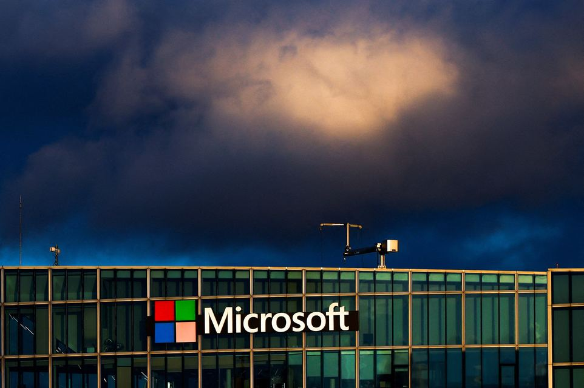

La caída global de Microsoft se debió a un fallo introducido por la compañía hace meses y que tumbó el 80% de sus servidores

El incidente, que se prolongó durante más de 18 horas, afectó a millones de usuarios de algunas de las aplicaciones más populares de la tecnológica, como Outlook, Teams, Copilot, Word, Excel o Power Point
Los fallos que experimentaron el pasado jueves y viernes varios servicios de Microsoft se originaron en una sobrecarga de los servidores de la compañía. Esta sobrecarga, a su vez, vino provocada por la implementación defectuosa de una serie de actualizaciones que venía desarrollando la compañía desde hace meses. Así lo asegura la tecnológica en un comunicado difundido esta mañana, en el que también vuelve a pedir disculpas a sus clientes por las molestias causadas.